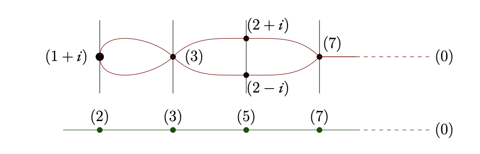

Currently, I am a 4th year maths undergraduate at Jadavpur University,
broadly interested in number theory, automorphic forms, \(L\)-functions and arithmetic geometry.
In the Summer of 2025, I was a Summer Research Intern at ISI Kolkata where I studied analytic number theory under the supervision of Prof. Satadal Ganguly. By Winter 2027 I intend to begin an MSc or PhD in pure maths, likely in Europe.
A small sample of my notes is here. Lately I've been reading Jacobson's Basic Algebra 1 & 2, Rudin's Real & Complex Analysis, and Hatcher's Algebraic Topology. I also write this blog.
Contact :
dassayan0013 [AT] gmail [DOT] com | CV